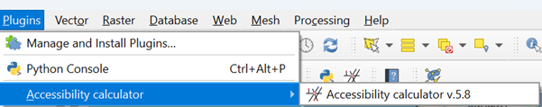
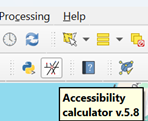

IRoundtrip accessibility – the experimental option
You need a QGIS to be installed on your PC, see https://qgis.org.
Go to Plugin → Manage and Install Plugins menu (Figure 1)

Figure 1: Step 1 of the Accessibility Calculator installation
Choose Install from ZIP (Figure 2)

Figure 2: Step 2 of the Accessibility Calculator installation
Find
tau_accessibility_calculator.zipfile and click Install Plugin. The plugin will be installed in the directoryC:\Users\NameUser\AppData\Roaming\QGIS\QGIS3\profiles\default\python\plugins\
The new button and menu item will be added to the toolbar panel and plugins’ menu


Figure 3: Two ways to activate the Accessibility Calculator plugin
Note
If you already have the installed version of this plugin, delete it, using the Manage and Install Plugins menu, before installing a new one. It is highly recommended to close QGIS after uninstalling the previous version of the Accessibility Calculator and then open QGIS again and install a new version.